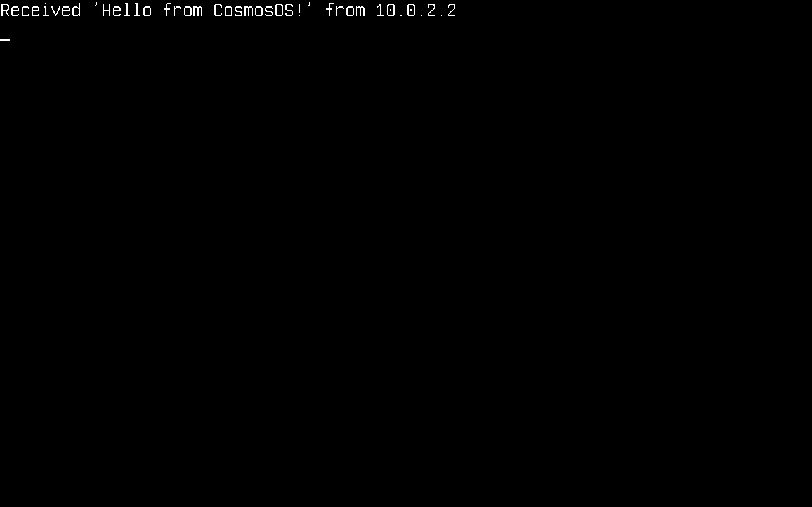

网络
本文将介绍 Cosmos Gen3 上的网络：如何启动网络协议栈，以及如何发送和接收数据包。可用的协议有 ARP、IPv4、IPv6、UDP、TCP、DHCP 和 DNS。
如果你来自 Gen2，主要区别如下：
| Gen2 | Gen3 | |
|---|---|---|
| TCP | 标准 System.Net.Sockets（通过 plug 实现） |
标准 System.Net.Sockets（通过 plug 实现） |
| UDP | Cosmos 专有的 UdpClient 类 |
标准 System.Net.Sockets.UdpClient（通过 plug 实现） |
| DHCP | Cosmos 客户端类 | Cosmos 客户端类（Cosmos.Kernel.System.Network） |
| DNS | Cosmos 客户端类 | 标准 System.Net.Dns（通过 plug 实现），或 Cosmos 的 DnsClient |
| 网卡驱动程序 | RTL8168、E1000、PCNET | 基于驱动工具包的 Intel E1000E（任何带有 PCI 主机节点的机器；x64 上 QEMU 默认的 q35 网卡），它同样会绑定 QEMU 和 VirtualBox（82540EM）以及 VMware（82545EM）的 8254x e1000；基于驱动工具包的 virtio-net（两种架构上均支持 PCI，ARM64 上还支持 MMIO） |
这些协议都没有实现其 RFC 中的全部功能。如果你发现 bug 或任何异常，请在我们的仓库中提交 issue。
在内核中启用网络
网络支持由一个功能开关控制。请确保内核的 .csproj 没有将其关闭（默认值为 true）：
<PropertyGroup>
<CosmosEnableNetwork>true</CosmosEnableNetwork>
</PropertyGroup>
启动时，无论是哪种网卡，都会通过驱动工具包到达 NetworkManager；两个驱动程序都随 Cosmos.Kernel.Drivers 一起提供，而每个内核都包含它。Intel E1000E 由 E1000EDriver 绑定：PCI 主机驱动程序发布该功能（function），驱动程序将其初始化并发布一个名为 e1000e 的接口，再由管理器的消费者注册它（编写驱动程序）。virtio-net 设备由 VirtioNetDriver 通过两种传输方式之一绑定：virtio PCI 传输驱动程序在该功能之下发布一个 virtio 节点，virtio MMIO 传输驱动程序在 virt 机器的插槽之下发布一个，同一个叶子驱动程序会绑定这两者，并发布一个名为 virtio-net 的接口（Virtio 设备）。工具包驱动程序发布的第一个接口就是主接口，顺序取决于驱动阶段绑定它们的顺序。在 x64 上，cosmos run 不需要额外的参数：QEMU 的 q35 默认网卡就是 e1000e。在 ARM64 上，需要显式挂接一块 virtio 网卡：
$ cosmos run # x64: default e1000e NIC, user-mode networking
$ cosmos run --nic virtio-net-pci # x64 or arm64: virtio NIC over PCI
$ cosmos run --nic virtio-net-device # arm64: virtio NIC over MMIO
virtio PCI 功能以 MSI-X 消息的形式发送中断，在 ARM64 上由 GICv3 的 ITS 进行路由（-M virt,gic-version=3）；cosmos run 启动 ARM64 时使用 QEMU 默认的 GICv2，它没有 ITS，因此在这种情况下 PCI 网卡发布时不带中断条目，VirtioNetDriver 以轮询方式驱动它，每 50 ms 清空一次接收队列。因此，--nic virtio-net-pci 在默认的 ARM64 启动方式下同样可用，而 MMIO 网卡则在自己的 GIC 中断线上运行，是那里的中断驱动之选。
使用 QEMU 的用户模式网络（默认方式）时，你的内核处在一个私有的 10.0.2.0/24 网络中：主机可通过 10.0.2.2 访问，QEMU 内置的 DHCP 服务器负责分配地址，出站的 UDP/TCP 流量经 NAT 转换后发往真实网络。
下面的代码片段依赖以下 using 指令：
using System.Net;
using System.Net.Sockets;
using System.Text;
using Cosmos.Kernel.System.Network;
using Cosmos.Kernel.System.Timers;
网络设备
NetworkManager 管理检测到的网卡。在进行任何配置之前，先检查是否存在设备并且已就绪：
if (NetworkManager.DeviceCount > 0)
{
Console.WriteLine("Device: " + NetworkManager.Name);
Console.WriteLine("MAC: " + NetworkManager.MacAddress?.ToString());
Console.WriteLine("Link up: " + NetworkManager.LinkUp);
Console.WriteLine("Ready: " + NetworkManager.Ready);
}
这些属性反映的是主适配器，也就是在没有指定其他适配器时受支持层所使用的那一个。有多块网卡时，可以枚举它们并另选一块作为主适配器：
for (int i = 0; i < NetworkManager.DeviceCount; i++)
{
NetworkAdapter adapter = NetworkManager.GetAdapter(i);
Console.WriteLine($"[{i}] {adapter.Name} {adapter.MacAddress} link={adapter.LinkUp}");
}
NetworkAdapter second = NetworkManager.GetAdapter(1);
if (second.IsValid)
{
NetworkManager.Primary = second;
}
NetworkAdapter 是一个句柄，而不是设备本身：它携带的是注册索引，因此默认构造的句柄不指向任何设备，其 IsValid 为 false。对于没有设备占用的索引，GetAdapter 返回的就是这样的句柄，这正是上面的赋值要加以保护的原因：Primary 的 setter 遇到不指向任何设备的句柄会抛出 ArgumentException，而 QEMU 默认只给内核一块网卡，所以在那里 GetAdapter(1) 不指向任何设备。

配置 IPv4
与任何操作系统一样，内核需要先有 IPv4 配置（地址、子网掩码、网关）才能与网络通信。该配置可以通过 DHCP 动态获取，也可以手动设置。
协议栈没有单独的初始化步骤。配置地址这一操作本身就会启动协议栈：它将地址和 MAC 地址映射到设备上。NetworkStack.RemoveAllConfigIP() 可以撤销这一操作。
通过 DHCP 动态配置
DhcpClient.SendDiscoverPacket() 会完成整个 DISCOVER → OFFER → REQUEST → ACK 交换过程，并应用得到的配置。它返回所用的毫秒数，超时则返回 -1：
DhcpClient dhcpClient = new();
if (dhcpClient.SendDiscoverPacket() != -1)
{
IPConfig? config = NetworkManager.Primary.IPConfig;
if (config is not null)
{
Console.WriteLine("IP address: " + config.Address.ToString());
Console.WriteLine("Subnet: " + config.SubnetMask.ToString());
Console.WriteLine("Gateway: " + config.DefaultGateway.ToString());
}
}
else
{
Console.WriteLine("DHCP timed out");
}

手动配置
if (!IPConfig.Enable(
new Address4(192, 168, 1, 69), // local address
new Address4(255, 255, 255, 0), // subnet mask
new Address4(192, 168, 1, 254))) // gateway
{
Console.WriteLine("No adapter to configure");
}
这样配置的是主适配器。要配置某个特定的适配器，请传入它的句柄。当句柄不指向任何设备时，Enable 返回 false，超出最后一个适配器的索引得到的正是这种句柄：
NetworkAdapter second = NetworkManager.GetAdapter(1);
if (second.IsValid
&& IPConfig.Enable(second,
new Address4(192, 168, 2, 69),
new Address4(255, 255, 255, 0),
new Address4(192, 168, 2, 254)))
{
Console.WriteLine("Configured the second adapter");
}
DHCP 一次只配置一个适配器。new DhcpClient() 在主适配器上进行交换，new DhcpClient(adapter) 则在句柄所指的适配器上进行；无论哪种方式，其他适配器都会保留各自的配置。SendReleasePacket() 将该适配器的地址交还给服务器，并使其处于未配置状态：
NetworkAdapter second = NetworkManager.GetAdapter(1);
if (second.IsValid && new DhcpClient(second).SendDiscoverPacket() != -1)
{
Console.WriteLine("Second adapter: " + second.IPConfig?.Address.ToString());
}
读取配置
每个适配器都带有当前在其上生效的配置，未配置时则为 null：
Console.WriteLine(NetworkManager.Primary.IPConfig?.Address.ToString());
Console.WriteLine(NetworkManager.GetAdapter(1).IPConfig?.SubnetMask.ToString());
IPv6
IPv4 配置还会在设备上启用一个 IPv6 链路本地地址：fe80::/64，接口标识符由其 MAC 地址派生（RFC 4291 附录 A）。在 QEMU 的默认网卡上，该地址为 fe80::5054:ff:fe12:3456。邻居发现（Neighbor Discovery）解析链路上的地址，方式与 IPv4 下的 ARP 相同，ICMPv6 回显在两个方向上都能工作。
Address6? linkLocal = NetworkManager.Primary.LinkLocalAddress; // null until the device is configured
Icmpv6Client ping = new();
ping.Connect(new Address6(0xFEC0_0000, 0, 0, 2)); // QEMU user networking answers on fec0::2
ping.SendEcho();
Cosmos.Kernel.System.Network.EndPoint from = new(Address6.Zero, 0);
int elapsedMs = ping.Receive(ref from, 5000); // -1 on timeout
ping.Close();
| IPv4 | IPv6 | |
|---|---|---|
| 地址 | IPConfig.Enable 或 DHCP |
链路本地地址，由 MAC 地址派生 |
| 地址解析 | ARP | 邻居发现（请求与通告） |
| Ping | IcmpClient |
Icmpv6Client |
| UDP 和 TCP | UdpPacket、TcpPacket |
同样这两个类，校验和基于 IPv6 伪首部计算 |
| DNS | DnsClient，A 记录 |
同一个客户端，AAAA 记录 |
IPv6 目前尚未涵盖的内容：链路本地以外的地址（路由器通告会被忽略，没有 SLAAC 也没有 DHCPv6，因此只能访问链路上的目标），以及 .NET 套接字类上的 AddressFamily.InterNetworkV6。
UDP
UDP 通过标准的 .NET System.Net.Sockets.UdpClient 实现，不需要任何 Cosmos 专有的类。Cosmos.Kernel.System.Network 有一个自己的 UdpClient（数据包级客户端），因此像上面那样同时导入两个命名空间时，请写出 .NET 那个类的完整名称。发送会立即发出；接收时则要轮询 Available（在没有待处理数据时接收会阻塞）：
var udpClient = new System.Net.Sockets.UdpClient(4242);
/* Send data: 10.0.2.2 is the host under QEMU user networking */
byte[] message = Encoding.ASCII.GetBytes("Hello from CosmosOS!");
udpClient.Send(message, message.Length, new IPEndPoint(IPAddress.Parse("10.0.2.2"), 4242));
/* Receive data */
IPEndPoint remote = new(IPAddress.Any, 0);
while (udpClient.Available == 0)
{
TimerManager.Wait(100);
}
byte[] data = udpClient.Receive(ref remote);
Console.WriteLine("Received '" + Encoding.ASCII.GetString(data) + "' from " + remote.Address);
udpClient.Close();

TCP 客户端
TCP 同样通过标准的 .NET 类实现：TcpClient、TcpListener 和 NetworkStream。
var tcpClient = new TcpClient();
tcpClient.Connect(IPAddress.Parse("10.0.2.2"), 4343);
NetworkStream stream = tcpClient.GetStream();
/* Send data */
byte[] message = Encoding.ASCII.GetBytes("Hello from CosmosOS!");
stream.Write(message, 0, message.Length);
/* Receive data */
while (!stream.DataAvailable)
{
TimerManager.Wait(100);
}
byte[] buffer = new byte[tcpClient.ReceiveBufferSize];
int bytesRead = stream.Read(buffer, 0, buffer.Length);
Console.WriteLine("Received '" + Encoding.ASCII.GetString(buffer, 0, bytesRead) + "'");
tcpClient.Close();
Read 与在 .NET 中一样会等待数据：字节一到达它就返回，只有在对端关闭连接后才返回 0，因此 DataAvailable 循环是可选的。设置 ReadTimeout（即套接字的 ReceiveTimeout）可以限定等待时间，超时后 Read 会抛出 IOException。

TCP 服务器
TcpListener 接受传入的连接。轮询 Pending() 可以避免在 AcceptTcpClient() 中阻塞：
var listener = new TcpListener(IPAddress.Any, 4444);
listener.Start();
Console.WriteLine("Listening on port 4444...");
while (!listener.Pending())
{
TimerManager.Wait(100);
}
TcpClient client = listener.AcceptTcpClient();
Console.WriteLine("Client connected!");
NetworkStream stream = client.GetStream();
while (!stream.DataAvailable)
{
TimerManager.Wait(100);
}
byte[] buffer = new byte[client.ReceiveBufferSize];
int bytesRead = stream.Read(buffer, 0, buffer.Length);
Console.WriteLine("Received '" + Encoding.ASCII.GetString(buffer, 0, bytesRead) + "'");
/* Echo it back */
stream.Write(buffer, 0, bytesRead);
client.Close();
listener.Stop();
要从主机访问 QEMU 用户模式网络中的监听器，请用 cosmos run --hostfwd tcp::4444-:4444 将主机端口转发到客户机（可重复使用；直接使用 QEMU 时写作 -nic user,model=e1000e,hostfwd=tcp::4444-:4444），然后在主机上连接 localhost:4444。
如果需要通过网络使用交互式 shell，Cosmos.Network.Telnet 包中的 TelnetServer 会为每个客户端提供一个独立的控制台会话（控制台会话与 Telnet）。

FTP 服务器
Cosmos.Network.Ftp 包通过 FTP 提供 VFS 中的一个目录。版本 2 是 Gen3 的版本；1.x 用于 Gen2。在内核中添加 <PackageReference Include="Cosmos.Network.Ftp" Version="2.0.0" />，并在网络配置完成且文件系统挂载之后启动服务器：
using System.Threading;
using Cosmos.Network.Ftp;
FtpServer server = new("/mnt");
new Thread(server.Listen).Start(); // Listen() serves every client until server.Close()
客户端会把 /mnt 视为 /，并且无法离开它。不设置 Authenticate 时，任何用户名配任何密码都能登录；设置它即可校验凭据。传输采用被动模式，默认使用 50000 到 50009 端口（PassivePortMin 和 PassivePortMax），因此在 QEMU 用户模式网络下，除了控制端口之外还要转发这些端口：cosmos run --hostfwd tcp::2121-:21 --hostfwd tcp::50000-:50000 ...，然后执行 curl ftp://localhost:2121/。PASV 应答中给出的是客户机自己的地址 10.0.2.15，主机无法访问该地址：curl 会忽略它，但 FileZilla 会连接它，因此请设置 PassiveAddress = IPAddress.Loopback，让 PASV 改为给出 127.0.0.1。
DNS
有两个 API 可以解析名称：标准的 System.Net.Dns，以及 Cosmos 的 DnsClient。无论使用哪一个，都要注册一个域名服务器，因为没有可供读取的 resolv.conf，而域名服务器通常由 DHCP 提供：
DnsConfig.Add(new Address4(1, 1, 1, 1)); // Cloudflare public DNS
IPAddress[] addresses = Dns.GetHostAddresses("github.com");
Console.WriteLine("github.com resolved to " + addresses[0].ToString());
System.Net.Dns 通过平台层上的一个 plug 到达 Cosmos 的解析器，它的所有入口点最终都汇集到这个 plug，因此所有阻塞重载都靠这一个 plug 就能工作。与桌面运行时相比有两处细节不同：查找失败时会抛出 SocketException，而 Cosmos 客户端则返回 null；Dns.GetHostName() 返回的是 DnsConfig.HostName，而这个值不会有任何代码替你设置。
Cosmos 的 DnsClient 是另一条途径，当你需要应答数据包或完整的应答列表时，就应该使用它：
DnsConfig.Add(new Address4(1, 1, 1, 1)); // Cloudflare public DNS
var dnsClient = new DnsClient();
dnsClient.Connect(new Address4(1, 1, 1, 1));
/* Query a single domain name */
dnsClient.SendQuery("github.com");
/* Receive the answer (5 s timeout) */
Address? address = dnsClient.Receive(5000);
if (address != null)
{
Console.WriteLine("github.com resolved to " + address.ToString());
}
dnsClient.Close();
DNS 在两个 IP 版本上是同一个协议，因此 DnsClient 同时支持两者。有两件事相互独立地变化：传给 Connect 的服务器地址决定由哪个版本承载查询，传给 SendQuery 的记录类型决定应答中包含哪个地址族。IPv4 查询可以请求 IPv6 地址，反之亦然：
using Cosmos.Kernel.System.Network.Protocols.Dns; // DnsRecordType, part of the packet seam (COSMOS0002)
/* Ask for the IPv6 address, over whichever version reaches the server */
dnsClient.SendQuery("github.com", DnsRecordType.AAAA);
/* Every address record for the name, after any CNAME chain */
List<Address>? all = dnsClient.ReceiveAll(5000);
DHCP 则是相反的情况，仍然只支持 IPv4：DHCPv6 是另一个协议，而不是在 IPv6 上运行的 DHCP，它与 DHCP 的端口、消息类型和选项代码都不相同。

构造数据包
客户端背后的数据包类型作为实验性扩展点公开：内核可以自己构建协议数据包，通过协议栈发送，并接收解析后的数据包对象而不是负载字节。该扩展点带有 COSMOS0002 诊断（公共 API 跟踪）；在内核项目明确承认缺少兼容性承诺之前，引用它会导致构建错误：
<PropertyGroup>
<NoWarn>$(NoWarn);COSMOS0002</NoWarn>
</PropertyGroup>
该扩展点由三部分组成：
| 部分 | 成员 |
|---|---|
| 数据包类型 | EthernetPacket、ArpRequestEthernet/ArpReplyEthernet、InternetPacket、IPPacket、IcmpEchoRequest/IcmpEchoReply、UdpPacket、DhcpDiscover/DhcpRequest/DhcpRelease、DnsPacketQuery/DnsPacketAnswer、TcpPacket |
| 发送与注入 | NetworkStack.Send(InternetPacket) 将构建好的数据包加入队列并解析其邻居地址；NetworkStack.HandlePacket 将原始帧注入接收路径 |
| 数据包级客户端 I/O | UdpClient.Send(UdpPacket) / UdpClient.ReceivePacket(timeout)、IcmpClient.Send(IcmpPacket) / IcmpClient.ReceivePacket(timeout) |
数据包类型构成 Cosmos.Kernel.System.Network.Protocols 子树：EthernetPacket 和 InternetPacket 位于其根部，然后每个协议一个命名空间（Arp、Dns、IPv4 及其下的 IPv4.Dhcp、Tcp、Udp）。发送、注入和客户端成员仍保留在 Cosmos.Kernel.System.Network 中各自的稳定类型上。
该扩展点用于构建和读取协议栈已经支持的数据包类型，而不是用于添加新类型：它们的线路格式字段、首部校验和辅助方法以及 InitializeFields 解析钩子都是协议栈内部的，因此内核只能构造数据包并读取其属性，而不能派生出自己的类型。
UdpPacket 和 TcpPacket 用同一个类支持两个 IP 版本。它们并不派生自 IPPacket；它们把承载自己的数据包保存在 Network 属性中，该属性的类型是与版本无关的 InternetPacket。构建时传入两个相同版本的地址，然后把 packet.Network 交给 NetworkStack.Send：
using Cosmos.Kernel.System.Network.Protocols.Udp;
UdpPacket datagram = new UdpPacket(localIp, remoteIp, 5000, 4242, payload);
NetworkStack.Send(datagram.Network);
如果两个地址的版本不一致，会抛出 ArgumentException，而不是截断其中一个。
下面是一个手工构造的回显请求，通过调用者选择的标识符和序列号与其应答相对应：
using Cosmos.Kernel.System.Network;
using Cosmos.Kernel.System.Network.Protocols.IPv4;
IPConfig? config = NetworkManager.Primary.IPConfig;
if (config is null)
{
Console.WriteLine("The primary adapter has no IPv4 configuration.");
return;
}
Address localIp = config.Address;
Address gateway = config.DefaultGateway;
IcmpClient icmp = new IcmpClient();
icmp.Connect(gateway);
IcmpEchoRequest request = new IcmpEchoRequest(localIp, gateway, id: 0x1234, sequence: 7);
if (!NetworkStack.Send(request))
{
Console.WriteLine("No interface carries " + localIp.ToString());
return;
}
if (icmp.ReceivePacket(5000) is IcmpEchoReply reply
&& reply.IcmpId == 0x1234 && reply.IcmpSequence == 7)
{
Console.WriteLine("reply from " + reply.SourceIP.ToString());
}
icmp.Close();
数据包类型实际遵循的约定：
- 构建型构造函数在构造时写入完整的帧，包括长度和校验和；之后不会重新计算任何内容，因此构造完成后不得修改首部字节。
- 首部属性是构造时从
RawData解析出的快照；写入RawData不会刷新它们。 - 解析型构造函数（
new XxxPacket(byte[])）直接引用调用者的数组，不进行复制。 NetworkStack.Send根据数据包的源 IP 确定发送设备，没有已配置的接口与之匹配时返回false；除非目标是广播或多播组，否则目标 MAC 地址在 IPv4 上通过 ARP 解析，在 IPv6 上通过邻居发现解析。- UDP 校验和因版本而异，而且它是唯一因版本而异的字段。接收负载的构建型构造函数会写入校验和；只接收长度的构造函数则将该字段留为零，这在 IPv4 上表示“未计算”，在 IPv6 上则是非法的，因此负载就位后请调用
WriteChecksum()。 - 只由 IPv4 承载的协议是
IPPacket的子类：将协议号和负载长度传给构建型构造函数，并在DataOffset处写入负载。两个版本都承载的协议则改为组合一个InternetPacket，就像UdpPacket和TcpPacket那样。
当前限制
System.Net.Dns只解析 A 记录。在 plug 中IPAddress只保存四个字节，因此 AAAA 应答无处可返回，AddressFamily.InterNetworkV6会被直接拒绝。Cosmos 的DnsClient没有这一限制，对于 AAAA 记录会返回Address6。- 不支持反向查找。
Dns.GetHostEntry(IPAddress)需要针对in-addr.arpa发出 PTR 查询，而解析器不会发送这种查询，因此它会抛出异常，而不是返回名称。 Dns的异步重载未经验证。GetHostAddressesAsync以及Begin/End方法对都会到达同一个 plug，但它们是通过把阻塞调用排入线程池来到达的，而这个内核尚未针对线程池进行过测试。阻塞重载才是经过测试的路径。- IPv6 止步于链路。有链路本地地址、邻居发现、ICMPv6 回显，UDP 和 TCP 现在也通过与 IPv4 相同的数据包类在 IPv6 上传输，但没有路由表，因此每个目标都必须位于链路上。没有 SLAAC 或 DHCPv6，除链路本地地址外没有其他地址配置，而且在套接字 plug 中
IPAddress仍然只支持 IPv4，因此标准的 .NET 套接字类只能访问 IPv4。 - 没有 TLS，因此没有
HttpClient/HTTPS：只有原始 TCP。 - 多块网卡都会被注册和配置，出站数据包通过将源地址与每个接口的配置进行匹配来路由，因此
NetworkManager.Primary只决定不经路由的辅助方法（NetworkManager.Send、不带句柄的IPConfig.Enable）的去向。 - 驱动工具包撤回的接口会离开管理器的表，但其 IP 配置不会被移除，而且
NetworkAdapter句柄仍按位置索引，因此在撤回之前获取的句柄可能指向后来移入该位置的设备。 - 不支持半关闭：在已建立的 TCP 连接上调用
Close()时，会期望对端在 5 秒内响应 FIN 握手，如果对端保持连接打开则会抛出异常。 - 在 Cosmos 的
UdpClient和IcmpClient上，Close()和Dispose()不是同一回事。Close()停止向客户端投递数据，IcmpClient可以通过再次调用Connect()重新打开；Dispose()（包括using块执行的那一次）会永久停用该客户端，此后其他所有成员都会抛出ObjectDisposedException。
工作原理
你的代码调用标准的 .NET 套接字类，其 PAL 最终落到 Cosmos.Kernel.Plugs 中 Socket 层级的 plug（SocketPlug、TcpClientPlug、TcpListenerPlug、UdpClientPlug、NetworkStreamPlug，以及用于 Dns 的 NameResolutionPalPlug）。这些 plug 再委托给 Cosmos 网络协议栈（基于两个 IP 版本的 TCP 状态机和 UDP 层，IPv4 之下是 ARP 和以太网，IPv6 之下是 ICMPv6 和邻居发现），协议栈通过注册到 NetworkManager 的网络设备收发帧：即某个驱动工具包驱动程序发布的接口，E1000E 的或 virtio-net 的。工具包驱动程序收到的帧会在工具包的工作线程上交给协议栈，在处理程序执行期间中断处于禁用状态。Cosmos 的 DhcpClient 和 DnsClient 直接建立在 Cosmos 的 UDP 层之上，其中 DhcpClient 只支持 IPv4。
TcpClient / TcpListener / UdpClient / NetworkStream (stock BCL)
│
Socket plugs (Cosmos.Kernel.Plugs)
│
Cosmos TCP state machine / UDP (Cosmos.Kernel.System.Network)
│ DhcpClient / DnsClient ride UDP directly
IPv4 / ARP and IPv6 / Neighbor Discovery / Ethernet
│
Network device (e1000e or virtio-net, over the driver kit)